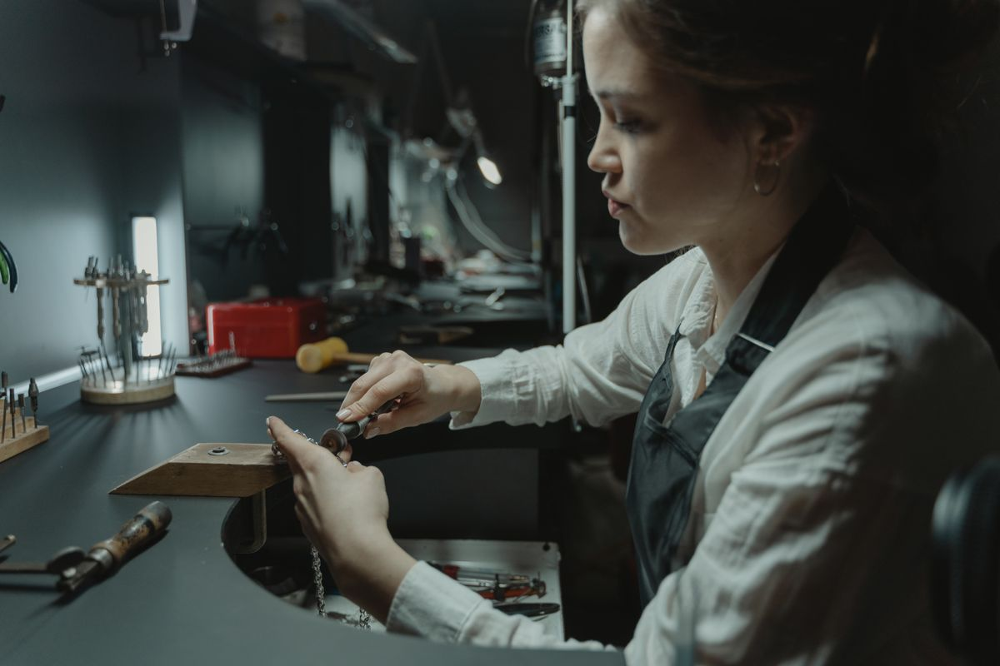

Apprenticed 2004 Own bench since 2013 Training family bench · Pune & Jaipur
The goldsmith
Third generation at the bench. First to print the card.
The sunar's bench in my grandfather's shop ran on memory and trust: the rate lived in his head, the making charge was a judgement, and a customer who asked why was answered with a reputation. The work was honest. The arithmetic was invisible.
I apprenticed at that bench from sixteen, then spent four years in Jaipur learning filigree from a master who weighed everything twice and explained it once. When I opened my own bench in Pune in 2013, I kept the family's standard for the metal and changed the standard for the numbers: the card is printed, the weighing happens in front of the client, and every commission becomes an entry in a book the client can ask to see.
Nothing about that is a technique. It is a decision about what a goldsmith owes a person who cannot assay gold: not faith — figures.
How a commission runs
- Talk & sketchWhat the piece is for, what it must survive, what it should weigh on the wrist or the neck. Sketches at the counter, no charge.
- Weigh & quoteThe design is costed from the printed card — metal, making, stones as separate lines. Old gold, if any, is weighed in front of you and credited in the same document. The quote is valid for seven days.
- Deposit — 40%On the day the deposit clears, the metal for your piece is bought. From that moment the metal line of your quote cannot move, whichever way the market goes.
- MakingThe piece is weighed at each stage and the weights entered in the book. You may visit the bench and see both — the piece and the entry.
- Assay & hallmarkFinished pieces that fall under the hallmarking rules go to an independent assay centre: the fineness is tested by someone who does not work for this bench, and the mark is struck by them, not by me.
- Delivery & the bookYou receive the piece, its hallmark, and a copy of its entry — weights, card rates, credits, balance — to keep with the piece.

The policies, in print
Old metal
Your old gold is weighed in front of you, on a scale you can read, and the weight is written down before its value is discussed. Credit is given at the day's card rate for its karat, less a printed 2% refining deduction — refining is real work and the deduction is on the card, not discovered later. If you decide against the work, your metal goes home with you, entire. Nothing is melted on a maybe.
Stones
Stones from your pieces are removed at the bench, in front of you where practical, and returned in a sealed, labelled packet — whether or not they are used in the new piece. A stone is never quietly kept, swapped, or "absorbed" into a price. Bench-supplied stones come with their papers, and the allowance classes on the card say what a class buys; a specific stone is chosen with you, not for you.
Hallmarking
Where the law requires hallmarking, pieces are sent to an independent, recognised assay and hallmarking centre. The centre tests the fineness itself and strikes the mark: purity in karat and millesimal fineness, the centre's mark, and the bench's registered mark. The point of a hallmark is that it is not the maker vouching for the maker — and a karat claim without one is only a claim.
Buy-back, stated plainly
Jewellery is bought to wear, and this bench does not sell it as an investment — gold prices fall as well as rise, and anyone who tells you otherwise is selling something. What can be promised is narrower and true: the bench buys back its own pieces for their metal at the day's card rate, less 4%. The making charge does not come back. That is the honest floor under a piece, and it is printed here so it can be quoted back.
Terms
- Quotes are itemised from the printed card and valid seven days; a quote fixes when the 40% deposit buys the metal.
- The card is reprinted monthly. The card that governs your piece is the one on your quote — not today's, not delivery day's.
- Repairs begin with a ₹600 assessment, credited against the work; nothing is repaired beyond the written assessment without a second agreement.
- What cannot be done is said before work starts, in writing, as Entry № 02 shows.
- Valuables are accepted in person at the bench only. Never post gold or stones on the strength of a web form — see the note on the Enquire page.